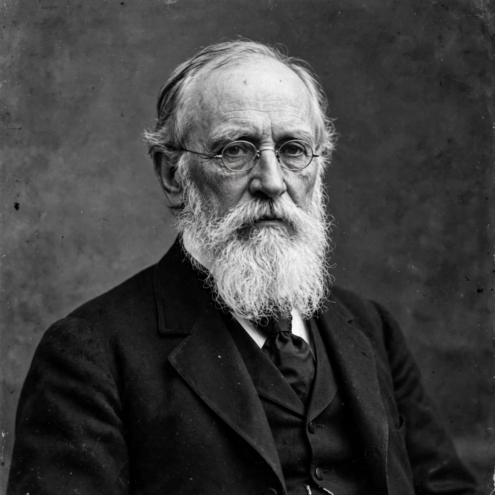

From Wikipedia, the free encyclopedia
| Sir George Gabriel Stokes | |
|---|---|
 Stokes in 1891 | |
| Born | 13 August 1819 Skreen, County Sligo, Ireland |
| Died | 1 February 1903 (aged 83) Cambridge, England |
| Known for | Navier–Stokes equations; Stokes' law; Stokes' theorem; Stokes shift; Stokes parameters |
| Posts | Lucasian Professor of Mathematics (1849–1903); President of the Royal Society (1885–1890) |
Sir George Gabriel Stokes, 1st Baronet (13 August 1819 – 1 February 1903), was an Irish mathematician and physicist who made foundational contributions to fluid dynamics, optics and mathematical physics. As Lucasian Professor at Cambridge for over fifty years, secretary and later president of the Royal Society, he was one of the most influential British scientists of the Victorian age.
Stokes was born in Skreen, County Sligo, the youngest son of an Anglican rector. Educated at schools in Dublin and Bristol, he entered Pembroke College, Cambridge, in 1837 and graduated as Senior Wrangler in 1841. He became a fellow of Pembroke in 1841 and was appointed Lucasian Professor of Mathematics in 1849 — a chair he held until his death, though for financial reasons he also worked as secretary of the Royal Society from 1854 to 1885. He served as MP for Cambridge University (1887–1891) and was created a baronet in 1889.
Stokes's early work concerned the motion of fluids. In 1845 he derived equations of viscous flow that, together with Claude-Louis Navier's earlier work, are known as the Navier–Stokes equations — still the governing equations of fluid mechanics and the subject of a Millennium Prize Problem. His 1851 paper "On the effect of the internal friction of fluids on the motion of pendulums" gave Stokes' law, the drag force on a small sphere moving through a viscous fluid, which underlies sedimentation analysis and the Millikan oil-drop experiment.
In 1852 Stokes explained fluorescence and coined the term, identifying the Stokes shift: fluorescent light has a longer wavelength than the light absorbed. He developed the Stokes parameters for describing polarised light, studied the wave theory of light and the luminiferous aether, and investigated the variation of gravity across the Earth's surface in work foundational to geodesy. In pure mathematics, Stokes' theorem relating surface and line integrals — actually communicated to him by Lord Kelvin — is a cornerstone of vector calculus.
The unit of kinematic viscosity (the stokes), the Stokes lines of spectroscopy and craters on the Moon and Mars bear his name. His collected papers, generous mentorship and long service made him, with Kelvin and Maxwell, a central figure of the Cambridge school of mathematical physics.